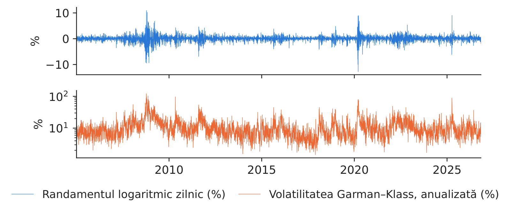
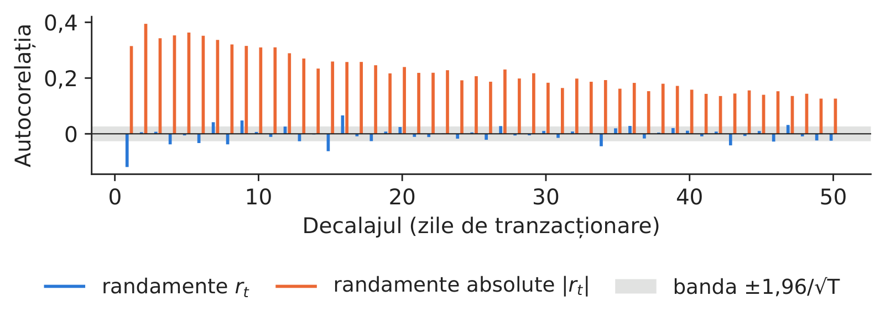
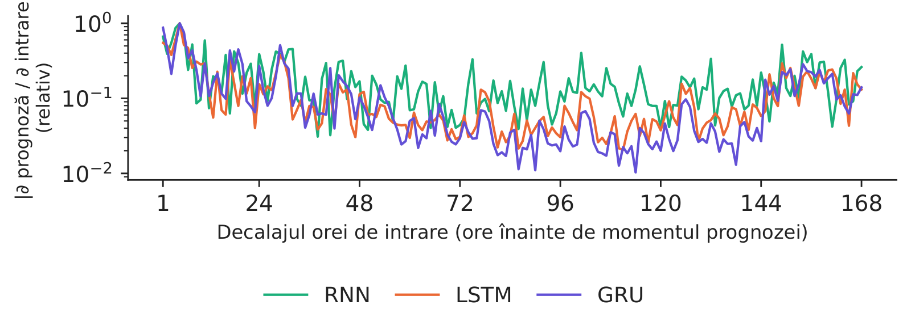
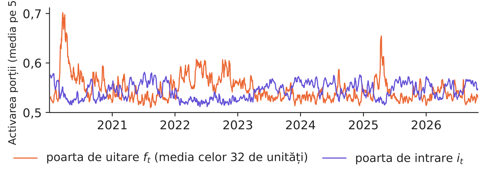
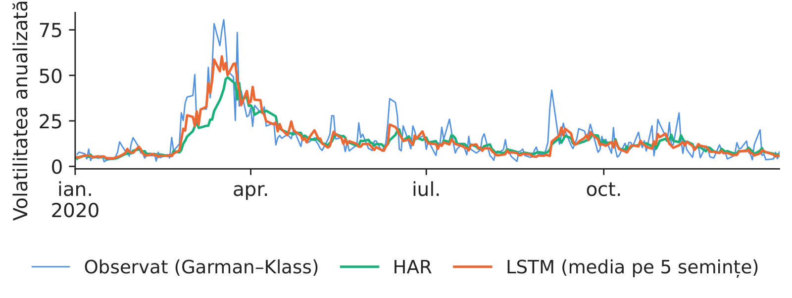
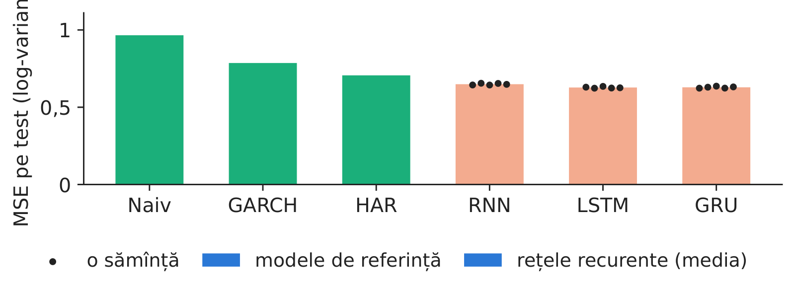
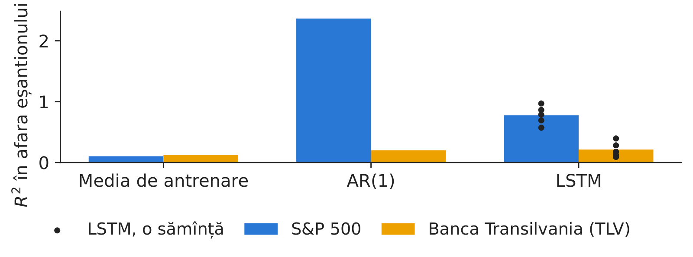
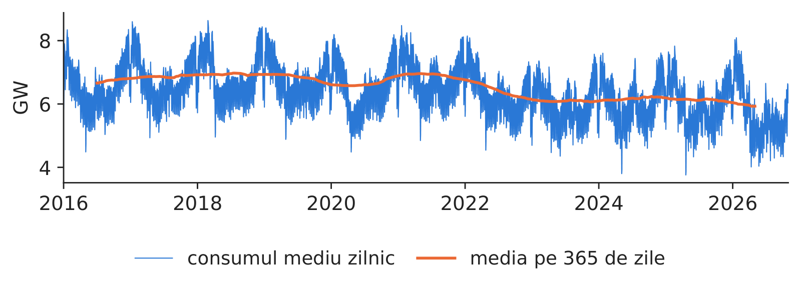
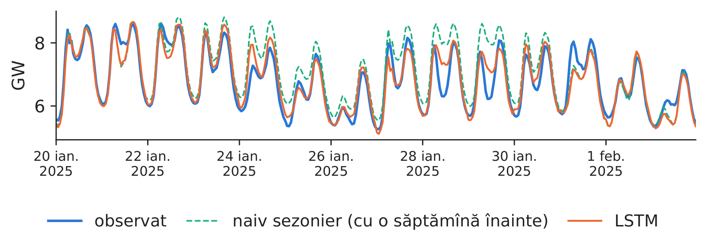
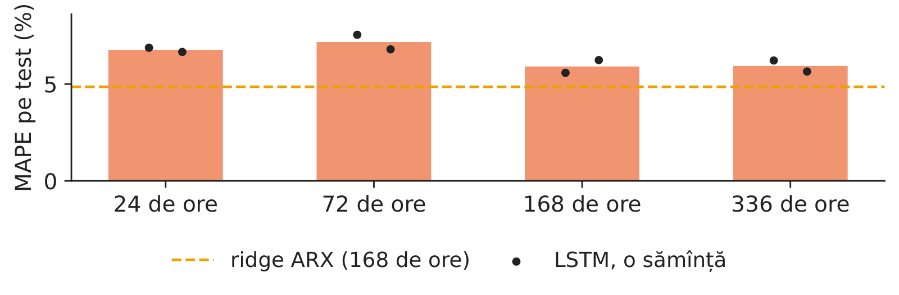

Cursul 5: Rețele recurente: RNN, LSTM și GRU pentru secvențe și serii de timp financiare
Cursul 5
Rețele recurente: RNN, LSTM și GRU pentru secvențe și serii de timp financiare
Prof. dr. Daniel Traian PELE
Academia de Studii Economice din București (ASE), Departamentul de Statistică și Econometrie Academia Română, Institutul de Prognoză Economică (IPE)
Prețurile, volatilitatea și consumul de energie electrică sosesc ca secvențe, o observație după alta, iar ce se întîmplă mîine depinde de ce s-a întîmplat înainte. O rețea neuronală recurentă (RNN) păstrează o stare ascunsă care rezumă trecutul și o actualizează după aceeași regulă la fiecare pas. Cursul scrie RNN, antrenarea ei prin propagarea înapoi în timp (BPTT) și motivul pentru care gradienții ei dispar, apoi cele două celule cu porți care rezolvă problema: long short-term memory (LSTM) și gated recurrent unit (GRU).
Rețelele sînt apoi testate acolo unde le-ar folosi un manager de risc sau un furnizor de energie, întotdeauna întîi față de modelele de referință: volatilitatea de a doua zi a indicelui S&P 500, față de modelul autoregresiv heterogen (HAR) și un model GARCH (autoregresiv generalizat cu heteroscedasticitate condiționată), randamentele de a doua zi ale S&P 500 și ale Banca Transilvania (TLV), față de prognoza zero, și consumul orar al României pentru ziua următoare, față de o prognoză naivă sezonieră și un model liniar. Răspunsurile diferă de la o sarcină la alta, iar aceasta este lecția principală.
Ce veți ști să faceți
Să scrieți o RNN sub formă de ecuații, să o desfășurați în timp și să-i numărați parametrii.
Să derivați BPTT și să explicați de ce gradienții dispar sau explodează.
Să citiți celulele LSTM și GRU poartă cu poartă.
Să prognozați volatilitatea, randamentele și consumul de energie electrică cu un protocol fără scurgeri de informație, începînd cu modelele de referință.
Să decideți cu testul Diebold–Mariano cînd merită costul unei rețele recurente.
Cercetări ale grupului nostruJheng, Tak, Găman, Mazurencu-Marinescu-Pele și Pele (2026) folosesc modele fundaționale preantrenate pentru serii de timp, fără reantrenare, pentru a prognoza VaR și pierderea medie peste VaR (expected shortfall) pe piețele din Europa Centrală și de Est, cu o etapă de calibrare conformală care face fiabile prognozele de coadă.
Secvențe în finanțe și energie
Randamentele și gruparea volatilității
Datele sînt prețurile zilnice de deschidere, maxim, minim și închidere ale S&P 500, de la 4 ianuarie 2005 la 30 octombrie 2026 (5 491 de zile de tranzacționare). Varianța zilnică este măsurată cu estimatorul Garman–Klass (GK), \(\hat\sigma^2_{GK,t}=\frac12\ln^2(H_t/L_t)-(2\ln2-1)\ln^2(C_t/O_t)\), care folosește prețurile maxim \(H_t\), minim \(L_t\), de deschidere \(O_t\) și de închidere \(C_t\) ale zilei. Anualizată, mediana ei este 8,77%, iar vîrful 122%, la 10 octombrie 2008.

Randamentele logaritmice zilnice și volatilitatea Garman–Klass anualizată a S&P 500 (scară logaritmică).
Sursa: Yahoo Finance, cotații zilnice. Date: 4 ianuarie 2005 - 30 octombrie 2026, zile de tranzacționare.
Autocorelația randamentelor și a randamentelor absolute
Autocorelația de ordinul 1 a randamentelor este −0,119, în interiorul benzii de zgomot de ±0,026; cea a randamentelor absolute este 0,315 și încă 0,126 la decalajul 50. Din 50 de decalaje, 15 sînt semnificative pentru randamente și 50 pentru randamentele absolute. Un model cu memorie merită deci încercat pentru risc, de exemplu ca intrare pentru valoarea expusă la risc (VaR), mult mai puțin pentru direcția prețului.

Autocorelația randamentelor zilnice și a randamentelor absolute, decalajele 1–50.
Sursa: Yahoo Finance, cotații zilnice. Date: 4 ianuarie 2005 - 30 octombrie 2026, zile de tranzacționare.
Starea se actualizează prin \(\mathbf h_t=\tanh(\mathbf W_{xh}\mathbf x_t+\mathbf W_{hh}\mathbf h_{t-1}+\mathbf b_h)\), iar prognoza este \(\hat y_t=\mathbf W_{hy}\mathbf h_t+b_y\). Aceleași matrice sînt folosite la fiecare pas, deci numărul de parametri, \(n_h(d+n_h+1)+n_h+1\), nu depinde de lungimea secvenței. Modelul nostru de volatilitate citește ferestre de 22 de zile de tranzacționare, cu \(d=3\) intrări (log-varianța, randamentul, randamentul absolut) și \(n_h=32\) de unități; doar ultima ieșire, log-varianța de mîine, intră în funcția de pierdere.
Propagarea înapoi în timp și gradienții care dispar
Desfășurată în timp, RNN este o rețea adîncă cu ponderi legate, iar gradientul lui \(\mathbf W_{hh}\) adună contribuțiile tuturor pașilor, fiecare înmulțită cu un produs de matrice jacobiene \(\mathbf J_s=\mathrm{diag}(1-\mathbf h_s^2)\mathbf W_{hh}\):
unde \(\sigma_{\max}\) este cea mai mare valoare singulară, iar \(\gamma\le1\) panta maximă a funcției \(\tanh\). Cînd \(\gamma\sigma_{\max}<1\), semnalul din trecutul îndepărtat dispare geometric; explozia gradienților este limitată prin plafonarea normei gradientului (folosim o normă maximă de 1, aleasă a priori).
Celule cu porți: LSTM și GRU
Celula LSTM
LSTM păstrează o stare separată a celulei, \(\mathbf c_t=\mathbf f_t\odot\mathbf c_{t-1}+\mathbf i_t\odot\tilde{\mathbf c}_t\), unde poarta de uitare \(\mathbf f_t\), poarta de intrare \(\mathbf i_t\) și poarta de ieșire \(\mathbf o_t\) sînt funcții logistice de \([\mathbf h_{t-1};\mathbf x_t]\), iar \(\mathbf h_t=\mathbf o_t\odot\tanh(\mathbf c_t)\). De-a lungul stării celulei, jacobianul este \(\mathrm{diag}(\mathbf f_t)\): cînd poarta de uitare rămîne aproape de unu, gradienții ajung departe în trecut. GRU face același lucru cu două porți și fără o stare separată, \(\mathbf h_t=(1-\mathbf z_t)\odot\mathbf h_{t-1}+\mathbf z_t\odot\tilde{\mathbf h}_t\), cu trei sferturi din parametrii unui LSTM.
Sensibilitatea la intrările trecute
Măsurăm cît de departe privesc rețelele de consum antrenate: media valorii absolute a gradientului ieșirii lor pentru ora 12 în raport cu fiecare dintre cele 168 de ore de intrare. Rețelele citesc săptămîna ca pe șapte profiluri zilnice, cîte un pas pe zi, ceea ce menține scurt drumul gradientului. Raportată la maximul ultimei zile, sensibilitatea la un decalaj de o săptămînă este 0,261 pentru RNN, 0,131 pentru LSTM și 0,140 pentru GRU.

Sensibilitatea prognozelor de consum ale modelelor antrenate la fiecare oră de intrare (scară logaritmică), 200 de zile de test.
Sursa: energy-charts.info (Fraunhofer ISE), din datele burselor și ale ENTSO-E. Date: 200 de zile de test din 2024; modele cu sămînța 20261108; prognoza pentru ora 12 (timpul universal).
În anii de test ai volatilității, media porții de uitare a LSTM antrenat este 0,547, iar a porții de intrare 0,544; corelațiile lor cu log-varianța de azi sînt 0,743 și −0,616. Porțile sînt un instrument de diagnostic pentru momentele în care modelul își schimbă regimul, nu o explicație.

Activările porților de uitare și de intrare ale LSTM-ului de volatilitate, medii pe 5 zile, 2020–2026.
Sursa: Yahoo Finance, cotații zilnice. Date: perioada de test 2020-2026, LSTM cu sămînța 20261108, ultimul pas al fiecărei ferestre de 22 de zile.
Fiecare număr pe care îl vede modelul trebuie să poată fi calculat în momentul prognozei. Seria S&P 500 este împărțită în ordine cronologică: antrenare pînă la 31 decembrie 2016 (3 020 de zile), validare pînă la 31 decembrie 2019 (754 de zile) și test de la 1 ianuarie 2020 (1 717 de zile). Scalarea folosește doar anii de antrenare; oprirea timpurie intervine cînd pierderea de validare nu s-a îmbunătățit timp de șase epoci. Fiecare rețea este antrenată cu cinci semințe, iar două prognoze sînt comparate cu testul Diebold–Mariano (DM), \(\mathrm{DM}=\bar d/\sqrt{\hat\sigma^2_{NW}/n}\), unde \(d_t\) este diferența zilnică a pierderilor, iar \(\hat\sigma^2_{NW}\) varianța ei de termen lung Newey–West.
Modelele de referință vin primele. Modelul HAR regresează log-varianța de mîine pe cea de azi, pe media săptămînală și pe cea lunară; pe anii de antrenare, coeficienții săi sînt 0,192, 0,439 și 0,293. Modelul GARCH(1,1) cu erori Student-t are \(\hat\alpha=0,117\), \(\hat\beta=0,873\), o persistență de 0,990 și 5,78 grade de libertate.
Studiul de caz A: volatilitatea S&P 500
Prognozele în criza din 2020
În fereastra crizei, de la 20 februarie la 30 aprilie 2020, eroarea pătratică medie (MSE) a log-varianței este 0,705 pentru prognoza naivă, 1,032 pentru GARCH, 1,014 pentru HAR și 0,521 pentru LSTM (media pe cinci semințe).

Prognoze pentru ziua următoare ale volatilității anualizate în 2020: valori observate, HAR și LSTM.
Sursa: Yahoo Finance, cotații zilnice. Date: anul de test 2020 (prognoze pentru ziua următoare), zile de tranzacționare.
Pe cele 1 717 de zile de test, MSE este 0,966 pentru prognoza naivă, 0,786 pentru GARCH și 0,706 pentru HAR; mediile pe semințe ale rețelelor sînt 0,649 (RNN), 0,628 (LSTM) și 0,629 (GRU). Prognoza medie LSTM schimbă MSE cu −11,6% față de HAR, cu o statistică DM de −5,52 (p = 0,000). Cîștigul este semnificativ pe această perioadă de test; înainte de a înlocui HAR într-un model VaR, verificați-l pe altă piață și pe subperioade și păstrați HAR ca soluție de rezervă. În criza din 2020, LSTM s-a adaptat mult mai repede decît HAR.

MSE pe test a log-varianței, pe modele; punctele sînt semințe individuale.
Sursa: Yahoo Finance, cotații zilnice. Date: test 2 ianuarie 2020 - 31 octombrie 2026; 5 semințe pentru fiecare rețea.
Studiul de caz B: prognoza randamentelor cu rețele neuronale
Din ultimele 22 de randamente, LSTM prognozează randamentul de mîine. Față de prognoza zero, \(R^2\) în afara eșantionului, pe anii de test, este 0,776% pentru S&P 500 (semințele între 0,572% și 0,969%) și 0,213% pentru Banca Transilvania; un model AR(1) dă 2,366% și 0,201%. LSTM ghicește semnul în 52,1% din zilele de test ale S&P 500, în timp ce 54,0% din zile au fost de creștere. Pe o piață lichidă, partea previzibilă a randamentelor este infimă față de zgomot: valori ale R² de unul sau două procente nu rezistă costurilor de tranzacționare, iar acuratețea semnului pentru LSTM rămîne sub cea a prognozei „mereu în sus”.

\(R^2\) în afara eșantionului pentru randamentele de a doua zi, 2020–2026: media de antrenare, AR(1) și LSTM (punctele: semințe individuale).
Sursa: Yahoo Finance; EODHD. Date: test 2020 - octombrie 2026; S&P 500 (Yahoo Finance) și TLV (EODHD, Bursa de Valori București).
În practică: un „predictor AI de randamente” oferit de un furnizor trebuie să treacă acest test pe ani pe care nu i-a văzut, față de prognoza „mereu în sus” și după costuri.
Studiul de caz C: consumul de energie electrică din România
Consumul are cicluri zilnice, săptămînale și anuale
Consumul orar al României, de la 1 ianuarie 2016 la 31 octombrie 2026, are o medie de 6 510 de megawați (MW); cele 129 ore lipsă rămîn lipsă, iar zilele care le conțin sînt omise. La sfîrșitul fiecărei zile \(d\), modelul prognozează cele 24 de valori orare ale zilei \(d+1\), pe baza ultimelor șapte profiluri zilnice și a calendarului zilei \(d+1\); rețelele și modelul liniar învață o corecție a prognozei naive sezoniere. Modelele de referință sînt prognoza naivă sezonieră (aceeași zi a săptămînii de acum o săptămînă), profilul de ieri și un model autoregresiv cu variabile exogene (ARX), estimat prin regresie ridge, pe aceleași informații.

Consumul mediu zilnic și media lui pe 365 de zile.
Sursa: energy-charts.info (Fraunhofer ISE), din datele burselor și ale ENTSO-E. Date: 1 ianuarie 2016 - 31 octombrie 2026, orar, MW medii pe zi.
Pe cele 1035 de zile de test, eroarea procentuală absolută medie (MAPE) este 6,79% pentru prognoza naivă sezonieră, 7,41% pentru profilul de ieri, 4,86% pentru ridge ARX și 5,29%, 5,81% și 5,17% pentru RNN, LSTM și GRU (prognoza medie a trei semințe). Eroarea absolută medie (MAE) pe oră este de 396 MW pentru prognoza naivă sezonieră, 269 MW pentru ridge ARX și 331 MW pentru LSTM; statistica DM a LSTM față de ridge ARX este 9,80 (p = 0,000).

Paisprezece zile de test din iarnă: consumul observat, prognoza naivă sezonieră și prognoza LSTM.
Sursa: energy-charts.info (Fraunhofer ISE), din datele burselor și ale ENTSO-E. Date: 14 zile de test, 20 ianuarie 2025 - 2 februarie 2025.
Cu același protocol, MAPE pe test a LSTM este 6,77% cu 24 de ore de intrare, 7,17% cu 72 de ore, 5,91% cu 168 de ore și 5,93% cu 336 de ore.

MAPE pe test a LSTM în funcție de fereastra de intrare (punctele: semințe individuale), față de ridge ARX.
Sursa: energy-charts.info (Fraunhofer ISE), din datele burselor și ale ENTSO-E. Date: zile de test 2024-2026; LSTM cu 2 semințe pentru fiecare fereastră.
În practică: înmulțiți megawații-oră de eroare economisiți cu diferența de preț de dezechilibru și comparați rezultatul cu costul de operare al modelului.
Cercetări ale grupului nostru
Jheng, Tak, Găman, Mazurencu-Marinescu-Pele și Pele (2026) folosesc modele fundaționale preantrenate pentru serii de timp, fără reantrenare, pentru a prognoza VaR și pierderea medie peste VaR (expected shortfall) pe piețele din Europa Centrală și de Est, cu o etapă de calibrare conformală care face fiabile prognozele de coadă. Będowska-Sójka, Wójcik și Pele (2025) construiesc un sistem de avertizare timpurie bazat pe învățare automată pentru criptoactivele care devin „zombie”. În BitMood (Conda, Găman, Bâg, Mazurencu-Marinescu-Pele, Pele și Härdle, 2026), regresia liniară și un LSTM bidirecțional au performanțe comparabile pe test în prognoza volumului Bitcoin din sentimentul de pe Facebook: complexitatea modelului nu garantează prognoze mai bune.
Sinteza secțiunii
O RNN își partajează ponderile în timp; propagarea înapoi în timp înmulțește matrice jacobiene, deci gradienții dispar sau explodează, iar LSTM și GRU adaugă un drum aditiv al memoriei. Pe date reale, rețelele depășesc HAR pe volatilitate, prognozele randamentelor nu explică aproape nimic, iar pe consumul orar un model liniar ARX, cu aceleași informații, cîștigă în fața rețelelor recurente. Cursul 6 trece la text.
Video: intuiția din spatele matematicii (în engleză)
Rețeaua europeană a operatorilor de transport și de sistem pentru energie electrică
EODHD
End of Day Historical Data (furnizor de date)
ES
pierderea medie așteptată peste VaR (expected shortfall)
GARCH
model autoregresiv generalizat cu heteroscedasticitate condiționată
GK
estimatorul Garman–Klass al varianței, bazat pe amplitudine
GRU
unitate recurentă cu porți (gated recurrent unit)
GW
gigawatt
HAR
model autoregresiv heterogen
IPE
Institutul de Prognoză Economică, Academia Română
LSTM
memorie pe termen scurt extinsă (long short-term memory)
MAE
eroarea absolută medie
MAPE
eroarea procentuală absolută medie
MLP
perceptron multistrat
MSE
eroarea pătratică medie
MW
megawatt
MWh
megawatt-oră
RNN
rețea neuronală recurentă
TLV
Banca Transilvania (simbolul la Bursa de Valori București)
VaR
valoarea expusă la risc (value-at-risk)
Bibliografie
Bengio, Y., Simard, P. & Frasconi, P. (1994). Learning long-term dependencies with gradient descent is difficult. IEEE Transactions on Neural Networks, 5(2), 157–166. doi:10.1109/72.279181
Bishop, C. M. & Bishop, H. (2024). Deep Learning: Foundations and Concepts, ch. 12. Springer. doi:10.1007/978-3-031-45468-4
Bollerslev, T. (1986). Generalized autoregressive conditional heteroskedasticity. Journal of Econometrics, 31(3), 307–327. doi:10.1016/0304-4076(86)90063-1
Będowska-Sójka, B., Wójcik, P. & Pele, D. T. (2026). Early warning systems for cryptocurrency markets: Predicting `zombie' assets using machine learning. North American Journal of Economics and Finance, 81, 102543. doi:10.1016/j.najef.2025.102543
Cho, K., van Merriënboer, B., Gulcehre, C., Bahdanau, D., Bougares, F., Schwenk, H. & Bengio, Y. (2014). Learning phrase representations using RNN encoder–decoder for statistical machine translation. EMNLP, 1724–1734. doi:10.3115/v1/D14-1179
Conda, A. I., Găman, Ș., Bâg, R. C., Mazurencu-Marinescu-Pele, M., Pele, D. T. & Härdle, W. K. (2026). BitMood: AI analysis of Bitcoin trends via Facebook emotions. Digital Finance, 8(3), 42. doi:10.1007/s42521-026-00205-3
Corsi, F. (2009). A simple approximate long-memory model of realized volatility. Journal of Financial Econometrics, 7(2), 174–196. doi:10.1093/jjfinec/nbp001
Diebold, F. X. & Mariano, R. S. (1995). Comparing predictive accuracy. Journal of Business & Economic Statistics, 13(3), 253–263. doi:10.1080/07350015.1995.10524599
Garman, M. B. & Klass, M. J. (1980). On the estimation of security price volatilities from historical data. Journal of Business, 53(1), 67–78. doi:10.1086/296072
Hochreiter, S. & Schmidhuber, J. (1997). Long short-term memory. Neural Computation, 9(8), 1735–1780. doi:10.1162/neco.1997.9.8.1735
Jheng, S.-L., Tak, R., Găman, Ș., Mazurencu-Marinescu-Pele, M. & Pele, D. T. (2026). Can foundation models manage risk? Zero-shot VaR and ES forecasting with conformal calibration in CEE markets. Economic Computation and Economic Cybernetics Studies and Research, 60(2), 267–290. doi:10.24818/18423264/60.2.26.14
Pascanu, R., Mikolov, T. & Bengio, Y. (2013). On the difficulty of training recurrent neural networks. ICML, PMLR 28(3), 1310–1318. arXiv:1211.5063
Rumelhart, D. E., Hinton, G. E. & Williams, R. J. (1986). Learning representations by back-propagating errors. Nature, 323, 533–536. doi:10.1038/323533a0
Werbos, P. J. (1990). Backpropagation through time: What it does and how to do it. Proceedings of the IEEE, 78(10), 1550–1560. doi:10.1109/5.58337
Text scris pentru versiunea web a cursului; cifrele, graficele și sursele provin din slide-uri și din Quantlet-urile lor.